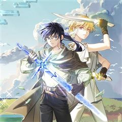
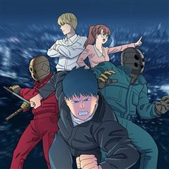
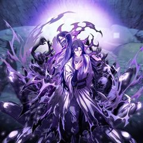

군림천하 같은 웹툰 추천

군림천하 · 이현석 / 용대운
군림천하 재밌게 봤다면 이 웹툰들도 좋아할 거예요. 같은 장르이면서 자극적인, 성장물 같은 요소가 겹치는 작품을, 겹치는 요소가 많은 순서로 20개 골랐어요.
2026-10-06 기준 · 네이버웹툰·카카오웹툰·레진코믹스 · 성인 작품 제외
내 취향으로 직접 골라 추천받기 →-
1
 카카오웹툰
카카오웹툰무장 - 무투전
고려를 지키는 무신이라 불리는 권. 그의 어린 시절부터 이야기는 시작된다. 주인공 권과 그의 형 정은 고려에서 가장 강했던 무인이자 노비였던 만적의 아들들이다. 아버지 만적이 노비 해방 운동을 일으키지만 실패로 끝나고 죽음을 맞자 정과 권은 누군가로…
자극적인액션무협카카오웹툰에서 보기 → · 무장 - 무투전 같은 웹툰 → -
2
 네이버웹툰
네이버웹툰천마육성
마교의 태왕각주 ‘사마귀’의 명령으로 화산파 출몰 지역으로 파견나간 비객조. ‘설휘’는 화산파의 절대고수 ‘구종명’에게 죽임을 당할 위기에 처한다. 그때 눈 앞에 상태창이 나타나고 정찰 임무를 받기 직전으로 회귀하게 된다. 설휘는 자신이 전생에서 죽…
자극적인액션무협네이버웹툰에서 보기 → · 천마육성 같은 웹툰 → -
3
 카카오웹툰
카카오웹툰수라전설 독룡
유구한 역사를 자랑하는 약문(藥門)들의 잇따른 멸문지화. 시체가 산처럼 쌓이고 피가 바다처럼 흐르는 절망의 지옥에서 마침내 수라(修羅)가 눈을 뜬다. 하나도 남김없이 모두 죽일 것이다. 놈들을 전부 죽일 때까지 절대로 끝내지 않아. 약문 백화절곡의…
자극적인액션무협카카오웹툰에서 보기 → -
4

-
5
 카카오웹툰
카카오웹툰신마대제
정체불명의 살수에게 할아버지를 잃은 소년, 부은설. 복수를 위해 마도십문 무학과 피의 실전을 삼켜 무림 최강으로 거듭난다. “반드시 찾아내 죽여주마.” 지금, 천하만마의 성지에서 무림을 집어삼킬 신마(神魔)가 눈을 뜬다.
자극적인액션무협카카오웹툰에서 보기 → -
6
 카카오웹툰
카카오웹툰창귀무쌍
평생 전장 만을 활보하며 살아온 늙은 노병 '추이'는 자신이 죽여 온 자들의 원념에 사로잡혀 죽음에 이른다. 추이가 다시 눈을 떴을 때, 이유는 알 수 없지만 아직 무공도 배우지 못하고 쟁자수로 일하던 어린 시절로 회귀해 있었다. 다시 돌아온 추이는…
자극적인액션무협카카오웹툰에서 보기 → -
7

카카오웹툰룬의 아이들
소년이여, 반드시 살아남아라! 삼촌에게 가문이 멸망당한 후 소년 보리스에게 남은 것은 가문의 검 “윈터러” 뿐이었다. 하지만 그 보물이 또 다른 위기의 원인이 될 줄이야. 사람들이 “윈터러”를 노릴 때 마다 보리스의 마음은 점점 더 겨울처럼 차갑고…
자극적인성장물액션카카오웹툰에서 보기 → -
8

카카오웹툰탈조클럽
지독한 빚 독촉과 고단한 배달 일상, 감사가 사라진 이 땅에서 라이더 박기별의 유일한 목표는 오직 ‘탈조선’뿐이다. 절망의 끝에서 AI 칵카투의 안내로 마주한 정체불명의 집단 ‘탈조클럽’. 자금을 지원해 주겠다는 달콤한 제안 뒤에는 기묘한 조건이 붙…
자극적인성장물무협카카오웹툰에서 보기 → -
9

카카오웹툰제암진천경
피바람을 불러온다는 천살성의 운명을 타고났지만 속세에 화를 끼치지 않기 위해 검을 잡지 않았다. 앞으로 일어날 모든 것을 알고 있었지만 외면했다. 그러나 세상에 무심했던 대가는 참혹했다. 가문은 멸문당했고, 가족들은 죽임을 당했다. 죽음 끝에서야 깨…
자극적인성장물액션카카오웹툰에서 보기 → -
10
 네이버웹툰
네이버웹툰마도전생기
정파무림 의천맹의 최강 살수, 천하진. 자유를 찾기 위해 탈출을 감행하지만 코앞에서 목숨을 잃고 만다. 그런데… '신교불패, 만마앙복. 삼공자님의 쾌유를 경하드리옵니다!' 무림의 공적, 마교의 삼공자로 전생해버렸다?! 정파무림 최강 비밀병기 천하진의…
성장물액션무협네이버웹툰에서 보기 → · 마도전생기 같은 웹툰 → -
11
 네이버웹툰
네이버웹툰절대검감
단전이 부숴졌다는 이유로 집에서는 내놓은 자식 취급을 받던 소운휘는 혈교에 납치되어서도 삼류 첩자로 살아왔다. 어느 날, 전설로만 알려진 검선비록을 찾는데 이용당하다 죽은 운휘는 10년 전, 혈교에 납치되던 그 날로 돌아가게 되고 검의 목소리를 듣는…
성장물액션무협네이버웹툰에서 보기 → · 절대검감 같은 웹툰 → -
12
 카카오웹툰
카카오웹툰신마의선
정파의 신의, 사파의 마의. 전설적인 두 의원이 혼인을 했다? 아빠는 신의, 엄마는 마의. 부모님의 의술을 물려받은 단악선 앞에 나타난 절대 고수. 그 운명적인 만남은 어린 단악선을 강호로 이끄는데...
성장물액션무협카카오웹툰에서 보기 → -
13
 카카오웹툰
카카오웹툰패왕의 별
강렬하고 붉은 패왕의 별이 떴다! 그 별의 정기를 받고 태어난 아이는 자라나 패왕이 되고 천하(天下)를 지배하게 된다는 전설의 별! 미천한 자리에서 가장 높은 곳에 오르려는 자, 천류영! “내 그릇의 크기는... 나도 몰라.” “아직까지 그릇을 채울…
성장물액션무협카카오웹툰에서 보기 → -
14
 네이버웹툰
네이버웹툰할배무사와 지존 손녀
죽을 날을 앞두고 미련없이 생을 마무리 하려던 순간 덮친 멸문지화! 유진산은 홀로 생존한 갓난 손녀 '유설'이 다 자랄 때까지만이라도 살아남기로 결심한다. 이미 늙어버린 몸으로 육아와 수련을 병행하며 눈물겨운 사투를 벌이는 동안, 어느새 무림지존의…
성장물액션무협네이버웹툰에서 보기 → -
15
 카카오웹툰
카카오웹툰일보신권
부유한 상방의 아들로 태어났지만, 집안을 말아먹을 팔자였던 ‘장건’. 팔자를 고치기 위해선 덕이 높은 고승과 지내며 검소한 생활을 익혀야 한단다. 그렇게 소림사의 짠돌이 ‘굉목’에게 맡겨진 장건은 꺼끌꺼끌한 무명 승복에 생쌀로 끼니를 때우는 고단한…
성장물액션무협카카오웹툰에서 보기 → -
16
 카카오웹툰
카카오웹툰천하제일 의뢰문
“드디어 자유다!” 십오 년만의 하산, 지난 세월 동안 헛되이 보낸 청춘을 보상 받기 위해 세상에 나섰다. 하산하며 사부와 약속했던 십행을 하루 빨리 해결한 뒤 한평생 즐기면서 살아가기로 마음 먹고 자신만만하게 첫발을 내디뎠지만 어째 처음 예상과는…
성장물액션무협카카오웹툰에서 보기 → -
17
 네이버웹툰
네이버웹툰황제의 검
정난의 변에서 간신히 살아난 주윤문, 마교 천하제일 천마(天魔)와 소림사 육조 혜능(慧能)을 몸 안에 받아 천마서생 '파천'으로 재탄생하게 되는데… 절대지존을 향한 파천의 새로운 이야기가 시작된다!
성장물액션무협네이버웹툰에서 보기 → -
18
 카카오웹툰
카카오웹툰천하제일 곤륜객잔
“누구시라고요?” “운룡일세.” 백 년 만에 폐관 수련을 끝마친 운룡 무정한 세월에 그가 기억하고 있던 곤륜파는 완전히 변해 있었다. 주린 배를 쥐고 방황하던 그에게 운명처럼 다가온 인연 “어려울 땐 서로 돕고 살아야죠.” 백 년 만에 접한 타인의…
성장물액션무협카카오웹툰에서 보기 → -
19
 네이버웹툰
네이버웹툰천씨세가의 망나니가 되었다
천씨세가의 대공자, 천무량을 평생 호위하며 충성을 다한 한 무사, 무명(無名) 하지만 천무량에게 배신당해 생을 마감한다. 그러나 다시 눈을 뜬 그는 자신을 죽인 천씨세가의 망나니 대공자, 천무량이 되어 있었다. 과거의 기억과 무공, 냉정한 판단력을…
성장물액션무협네이버웹툰에서 보기 → -
20